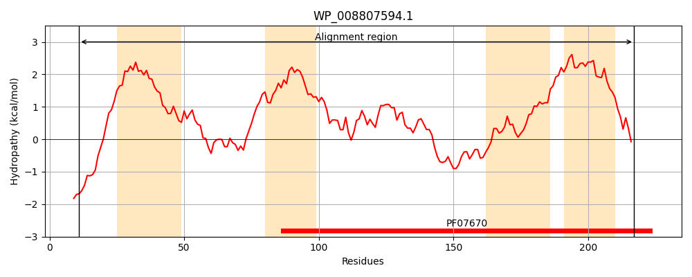
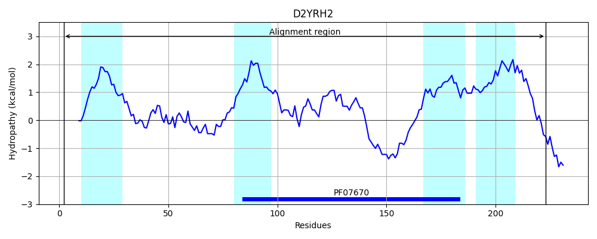
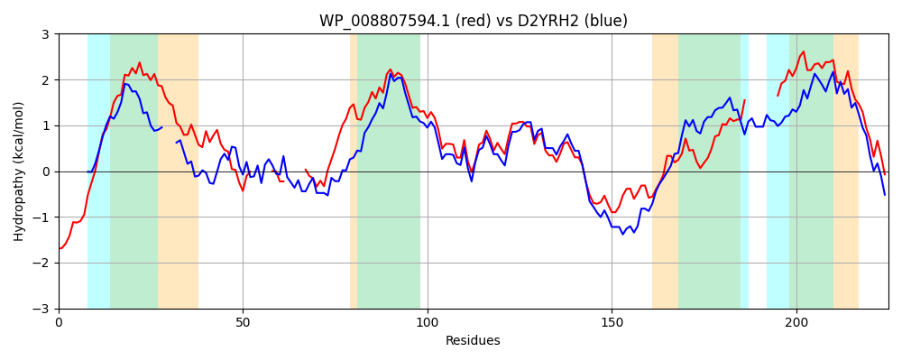

Hit Accession: D2YRH2
Hit TCID: 9.A.5.4.1
Hit Description: gnl|BL_ORD_ID|3104 gnl|TC-DB|D2YRH2|9.A.5.4.1 Putative uncharacterized protein OS=Vibrio mimicus VM573 GN=VMD_23280 PE=4 SV=1
Mach Len: 225
e:0.000000
Query TMS Count : 4
Hit TMS Count: 4
TMS-Overlap Score: 2.600000
Predicted Substrates:None
BLAST Alignment:
Score: 454 , Bit scores: 179 bits, E-value: 1.7e-56, Alignment length: 225, Percentage identity: 44
Query: 11 SDDATNEWRVGPGAWISLVVVLLVFSGLLFKVEGMAWLGAFDFTTLGGAFGTM-----KTPE-----TNTFIGSGGISAKAGFLFALSLVPTVMLALGLLEIFTHYGAIRAAHKLLTPLLRPLLGIPGYTGLALITDLQSTDAGAALTKELYDSKKISRKDVVIMGAWQYSGAGLINNYFSIGSALF--------ASLTIPIIIPLLLMFVLKFVGAAITRLVLN 217
S T E +V G +++L ++ FSGLL + W G FDFTTL GAFG + +T + T + G GG A+ GFLFAL+L+PTVM ALG++ + HYGA+ AA KLLTPLLRP++GIPG TGLALI LQSTDAGAA+T++L D +++++ + +Q+S I N+FS G+ LF +++T I + + +MF+ K VGA + R+ LN
Sbjct: 2 SQPTTLERKVTWGCYVALAFAVVFFSGLL---QSNQWYGVFDFTTLNGAFGKVAYNVSETADGLQVATTSLRGQGGSGARDGFLFALTLIPTVMFALGMINVLEHYGALDAARKLLTPLLRPIMGIPGNTGLALIASLQSTDAGAAMTRQLKDEGHMTKREADVFTMFQFSAGATIVNFFSSGAVLFTLTLADGSSAVTSSIGLAVAVMFIFKIVGANLFRIYLN 223 | Protein Hydropathy Plots: |
|---|
|  |  |
Pairwise Alignment-Hydropathy Plot:
|
|---|
|  |